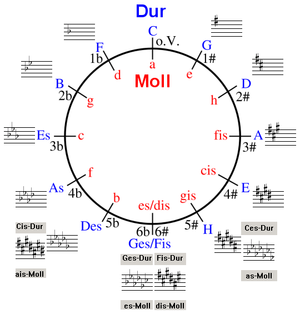

Zeneelmélet
Hangfajták
Női
- Szoprán: a legmagasabb női vagy gyermek hang, terjedelme többnyire c1–f2, hivatásos énekesnőknél a–c3
(f3–g3). Szólisták között megkülönböztetnek koloratúr, lírai, drámai szopránt.
- Mezzoszoprán: Szoprán és alt közötti női vagy gyermek hangfekvés, a szoprántól sötétebb hangszínű,
mélyebb hangterjedelmű általában kb. g–b2 között.
- Alt: Mély női vagy gyermekhang, terjedelme többnyire a–c2, mély alt esetén f-től, kivételesen e-től vagy
d-től e2, f2-ig.
- Kontraalt: Az alt hang kisebb terjedelme.
Férfi
- Kontratenor (vagy férfialt): a női alt szólam hangmagasságát nagyjából elérő, falzettszerű férfi énekes
hang. Elsősorban a 16–17. századi angol egyházi zenében fordult elő. Hangterjedelme c–c2, a magasabbaké
g–e2. A régi zene historikus előadásain a 20. század második felében felelevenítették a kontratenor
énektechnikát. Híres kontratenor énekesek: Andreas Scholl, Birta Gábor, Michael Jackson.
- Tenor: A legmagasabb férfihang hangfekvés, normál terjedelme többnyire c–a1, hivatásos énekeseknél c–c2
is lehet. Szólisták körében megkülönböztetnek hős és lírai tenort, tenorbuffót.
- Bariton: Középfekvésű férfihang, terjedelme többnyire A–el, gl, olykor G–e1, g1. Szólisták körében
megkülönböztetnek hős és lírai baritont, basszbaritont.
- Basszus: A legmélyebb emberi (férfi) hangfekvés, terjedelme többnyire E–d1, a mély basszus alsó határa
D, C, kivételes esetben B1 is lehet. Hivatásos énekesek körében megkülönböztetnek basszust,
mélybasszust, basszusbuffót.
Kvintkör
A kvintkör a zenében a hangnemek sorrendjét, valamint egymás közti kapcsolatát mutató ábra.
Legnagyobb előnye, hogy a hangnemi előjegyzéseket logikus sorrendben mutatja be.
A képen a központi C-dúrtól kiindulva jobbra kvintenként emelkedve a keresztes, balra kvintenként ereszkedve
a bés hangnemek találhatók.
